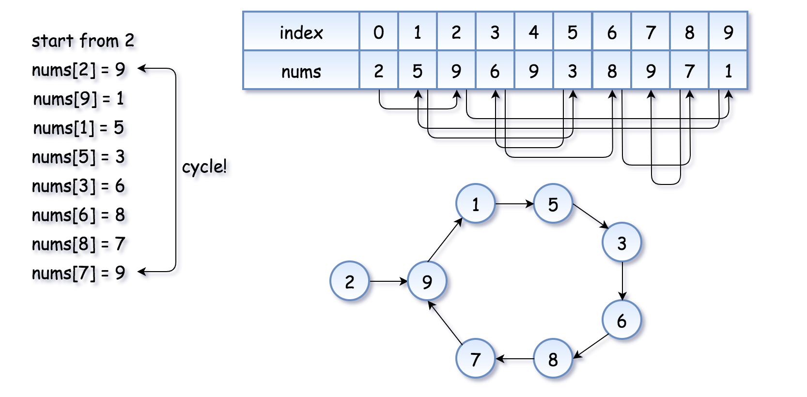
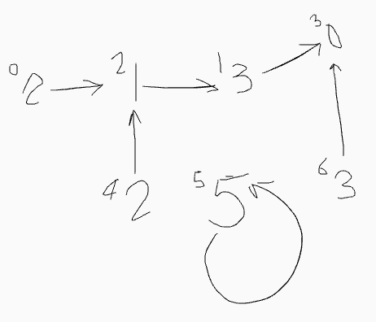
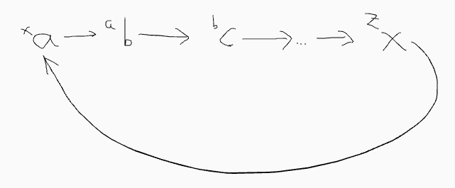
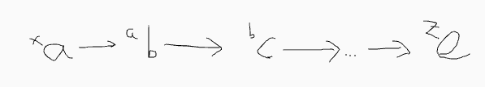
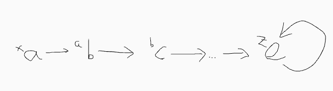
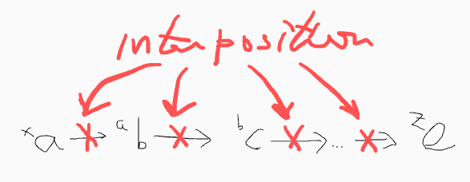
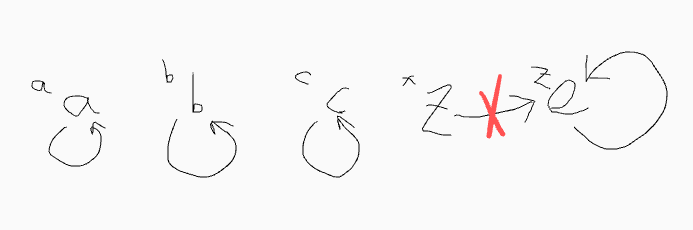
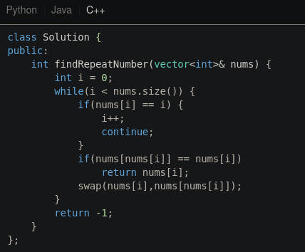

刷题是次要的, 因此关于它的文章不应该出现在时间轴显眼的地方.
这篇文章讲的是我如何理解 https://leetcode-cn.com/problems/shu-zu-zhong-zhong-fu-de-shu-zi-lcof/ 中的“原地置换”思想.
找出数组中重复的数字.
在一个长度为 n 的数组 nums 里的所有数字都在 0～n-1 的范围内. 数组中某些数字是重复的, 但不知道有几个数字重复了, 也不知道每个数字重复了几次. 请找出数组中任意一个重复的数字.
示例 1：
输入：
[2, 3, 1, 0, 2, 5, 3]
输出：2 或 3限制：
2 <= n <= 100000
来源：力扣（LeetCode）
链接：https://leetcode-cn.com/problems/shu-zu-zhong-zhong-fu-de-shu-zi-lcof
著作权归领扣网络所有. 商业转载请联系官方授权, 非商业转载请注明出处.
这题你用哈希表, set, bit vector 来做都算不合格, 由于我当时想不到还有什么方法, 于是就看了题解, 然而看不懂精选题解所说的原地置换.
为了确定这种解法是不是来自某种更抽象的思想, 我搜了 in-place swap, 结果说明这个名字的内涵太广泛, 搜 find duplicate number, 找到两处题解：
https://www.geeksforgeeks.org/find-duplicates-in-on-time-and-constant-extra-space/ : 和原题一样, 但要找所有重复的数字
int numRay[] = { 0, 4, 3, 2, 7, 8, 2, 3, 1 };numRay[2] => 3; numRay.size() => 9; numRay[3] = numRay[3] + 9 => 11;numRay[7] => 3; numRay.size() => 9; numRay[3] = numRay[3] + 9 => 20;x, 如果 numRay 里面只有 1 个 3, 那最终 numRay[3] 等于 x + 9, 如果 0 个 3, 那就是 x , x < 9(看题目, 元素属于 0~n-1 范围) , 所以 x+9 < 2 * 9,普遍形式：对于不重复的元素 y, 有 numRay[y] < size_of_array * 2numRay[3] = 20 > (9 * 2 = 18） 所以 3 重复n * size_of_array(n >= 0), 所以 mod size_of_array 可以得到原来的数字 int findRepeatNumber(vector<int> &nums) {
int ret = -1;
int size = nums.size();
for (int i = 0; i < size; ++i) {
// 按照这个算法
// 每个索引对应的数字最终等于 x + n * size
// (x 为原来的数字, n >= 0)
// 取模可以获得 x
int original_value = nums[i] % size;
if (nums[original_value] >= size) {
ret = original_value;
break;
}
else {
nums[original_value] = nums[original_value] + size;
}
}
return ret;
}
执行用时：40 ms, 在所有 C++ 提交中击败了81.09% 的用户
内存消耗：22.3 MB, 在所有 C++ 提交中击败了94.27% 的用户
https://leetcode.com/problems/find-the-duplicate-number/solution/
和原题不一样, 但提供了链表的思路
Floyd's Tortoise and Hare 用于检测链表是否有环. 比如题解上的这个图

但 Floyd's Tortoise and Hare 只限于只有一个数字重复的情况
对于 [2, 3, 1, 0, 2, 5, 3], 可以画成下图, 不知道是个什么玩意.

这种思路源自精选题解, 该作者认为, 对于任意 x, 应该有 [x] --> x
遍历中, 第一次遇到数字 x 时, 将其交换至索引 x 处；而当第二次遇到数字 x 时, 一定有 nums[x]=x, 此时即可得到一组重复数字.
算法流程：遍历数组 nums, 设索引初始值为 i=0 : 若 nums[i]=i： 说明此数字已在对应索引位置, 无需交换, 因此跳过； 若 nums[nums[i]]=nums[i]： 代表索引 nums[i] 处和索引 i 处的元素值都为 nums[i], 即找到一组重复值, 返回此值 nums[i] ； 否则： 交换索引为 i 和 nums[i] 的元素值, 将此数字交换至对应索引位置. 若遍历完毕尚未返回, 则返回 −1.作者：jyd
链接：https://leetcode-cn.com/problems/shu-zu-zhong-zhong-fu-de-shu-zi-lcof/solution/mian-shi-ti-03-shu-zu-zhong-zhong-fu-de-shu-zi-yua/
来源：力扣（LeetCode）
著作权归作者所有. 商业转载请联系作者获得授权, 非商业转载请注明出处.
如果 x 出现 2 次, 则在交换过程中最终会遇到 [x] 已经是 x 的情况. 这就是我不理解的地方, 如何证明最终会遇到 [x] == x？
由于这些 masters 有超人的直觉, 所以我只能自己推理.
([x]:y) 是指索引为 x 的节点的值为 y
>([a]:a)< 表示自己指向自己
每个 x 必须满足 ([x]:x)
nums[i] == [i] 满足条件 (1)
Look ahead!
nums[nums[i]] = nums[i], 满足条件(1)
假设, ([3]:6, 不属于场景(1), ([6]:6), 那直接返回 6 即可！那么, 如果 ([6]:7), 还需要 look ahead 吗？为什么要 look ahead?(问题(1))
这个问题目前无解
从索引 x 开始, 存在 2 种情况, 这里称这种链表为路径
闭环
([x]:a)-->([a]:b)-->([b]:c)-->...-->([z]:x)

直链
([x]:a)-->([a]:b)-->([b]:c)-->...-->([z]:e)

([x]:a) 与 ([a]:b) 交换, 相当于拔河里面的收绳>([a]:a)<, ([x]:b)-->([b]:c)-->...-->([z]:x)([x]:x), 同时这个路径的每一个元素都满足条件(1)!和闭环的 1, 2 一样, 但是由于某些原因, ([z]:e) 导致链表的终结.
终结只有一种可能

即 z == e
如果让路径自由延伸, 根据场景(3), 可以得知路径必然会终止于一个闭环： ([z]:z)
从 x 出发, 如果 ([z]:x), 就是场景(3)的闭环, 如果 ([z]:z), 则是直链
那么只要检查 ([a]: b) 中 a 是否等于 b, 即可终止循环, 但这还不够.
检查相当于介入路径的"延伸动作"：

介入是一组形式为环状依赖的判断集合( 2 依赖于 1 不成立, 1 依赖于 2 不成立)
当前的 ([z]: e) 是否 z == e, 如果是, 就说明到达终点, 但这个判断没什么用, ([z]:z) 说明不了 z 出现 2 次.
判断下一个节点是否满足条件(1)
[z] 没经过交换, z 原本就等于 e, 但 ([x]: z)-->([z]:z) 说明 z 在此时此刻出现了 2 次.[z] 经过了交换, z 等于 e, 意味着, z 已经出现过一次, 但 ([x]: z)-->([z]:z) 说明 z 在此时此刻出现了 2 次.[z] 是否经过交换, 所以 1 和 2 可以合并成一条：只要出现 ([x]: z)-->([z]:z), 说明 z 出现过 2 次.([z]: z) 必然是 [z] 第一次映射 z
若 nums[nums[i]]=nums[i]： 代表索引 nums[i] 处和索引 i 处的元素值都为 nums[i], 即找到一组重复值, 返回此值 nums[i] ；
nums[i] 和 i 处的值都是 nums[i]? 可以理解：因为
i 处的值是 nums[i]nums[i] 处的值是 nums[nums[i]]
那么为什么要交换呢？这位 master 并没有给出原因, 也没推理, 如果我们逐字斟酌了他的解法, 还没发现为什么要交换, 那就说明这位 master 的对交换的理解是后验的, 即不能根据理性而得出, 那么, 就是 master 的灵光一现！Eureka!!! 然而如果交换的正当性确实包含在他的描述中, 请明眼的读者指出.
通过路径（该术语的适用范围只限于本文）的概念可以证明交换的正当性.
本文受 Floyd's tortoise and hare 启示, 发现大小为 N, 元素的值范围为 [0, N) 的数组可以构造成一群链表, 而 leetcode master 所说的交换即是在链表中前进.